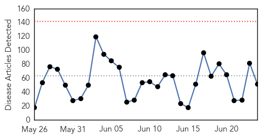

Unknown
30-Day Web Trend
0 alerts, 0 warnings

30-Day Twitter Trend
0 alerts, 0 warnings

Article Locations
Article Confidences

Top Articles:
- 0.999
- Insight - Saudi MERS response hobbled by institutional failings
- 0.917
- Chicago Tribune
- 0.917
- Chicago Tribune
- 0.917
- Chicago Tribune
- 0.917
- Chicago Tribune
- 0.917
- Chicago Tribune
- 0.917
- Chicago Tribune
- 0.917
- Chicago Tribune
- 0.917
- Chicago Tribune
- 0.917
- Chicago Tribune
- 0.917
- Chicago Tribune
- 0.917
- Chicago Tribune
- 0.917
- Chicago Tribune
- 0.917
- Chicago Tribune
- 0.917
- Chicago Tribune
- 0.917
- Chicago Tribune
- 0.917
- Chicago Tribune
- 0.917
- Chicago Tribune
- 0.917
- Chicago Tribune
- 0.917
- Chicago Tribune
- 0.917
- Chicago Tribune
- 0.917
- Chicago Tribune
- 0.917
- Chicago Tribune
- 0.917
- Chicago Tribune
- 0.917
- Chicago Tribune
- 0.912
- Near Sao Paulo Airport, Polio Virus Samples Found In Sewage
- 0.910
- The world windows to Thailand
- 0.910
- The world windows to Thailand
- 0.886
- Highly Infectious Polio Virus Discovered in Brazil's Sewage System
- 0.870
- Expert Who First Spotted Lyme In Ticks Calls 'Chronic' Lyme Overdiagnosed
- 0.866
- At least 18 killed in attack on northern Nigerian village
- 0.866
- Gas flows to EU from Ukraine via Slovakia normal on Tues-operator
- 0.866
- Kerry in Kurdistan to urge leaders to be part of national government
- 0.866
- Martin poses next to pieces of cork after harvesting them from the trunks of cork oak trees in a forest in Cortes de la Frontera
- 0.863
- Advanced Lyme disease: ‘a terrible place to be’
- 0.801
- Private health sector charges are exorbitant
- 0.719
- EPA warns on germs in drinking water
- 0.639
- Tuberculosis case confirmed at University of Moncton
- 0.623
- Mis-use of antibiotics is creating drug-resistant superbugs, Australian doctors warn
- 0.623
- Mis-use of antibiotics is creating drug-resistant superbugs, Australian doctors warn
- 0.617
- Lyme disease task force awaits Gov. Corbett's signature
- 0.608
- CDC reassigns director of lab behind anthrax blunder
- 0.596
- UK to help save millions from preventable blindness
- 0.585
- You can ask your doc to wash: Covenant, St. Mary's hospital leaders talk hygiene
- 0.579
- South Sudan: 50,000 South Sudanese children at risk of death
- 0.578
- Tick season brings Lyme disease into spotlight and health officials warn that's not all they carry
- 0.576
- Massena Memorial Hospital adds new infectious disease specialist
- 0.556
- Pharrs take medical mission trip to Haiti
- 0.551
- Ashill great-grandmother, 95, ‘disgusted’ at being de-registered from Watton surgery
- 0.540
- OSF St. Elizabeth could face Medicare penalty
Showing top 50 articles...
Top Tweets:
-
No tweets found for Jun 24, 2014
Chikungunya
30-Day Web Trend
9 alerts, 4 warnings

30-Day Twitter Trend
0 alerts, 0 warnings

Article Locations

Article Confidences

Top Articles:
- 0.999
- Florida: Travel-associated Chikungunya cases increase by six
- 0.997
- Chikungunya virus spreads to Peru
- 0.997
- Alabama has first reported case of Chikungunya virus
- 0.997
- Chikungunya virus spreads to Peru
- 0.996
- Kentucky Department of Public Health confirms 1st case of chikungunya virus
- 0.996
- Chikungunya fever confirmed in Peru
- 0.996
- Chikungunya Virus Spreads to Peru — Naharnet
- 0.996
- Caribbean Travel Health Alert: Untreatable mosquito-borne virus threatens tourism
- 0.995
- Chikungunya virus spreads to Peru - Peru
- 0.991
- Mosquito-borne illness confirmed in Kentucky
- 0.991
- Mosquito-borne virus confirmed in Kentuckian who visited Haiti
- 0.988
- Health officials warn travelers of mosquito-borne virus
- 0.984
- 1st case of mosquito-borne chikungunya disease in Polk County
- 0.968
- Peru: Chikungunya virus spreads to Peru
- 0.955
- Mississippi confirms first case of mosquito-borne chikungunya virus
- 0.822
- Health officials caution to prevent mosquito breeding and bites
- 0.816
- Kentucky confirms first case of Chik-V virus
- 0.783
- Mosquito-Borne Illness Confirmed in Kentucky
- 0.700
- Chikungunya case confirmed in Kentuckian who traveled abroad recently
Top Tweets:
-
No tweets found for Jun 24, 2014